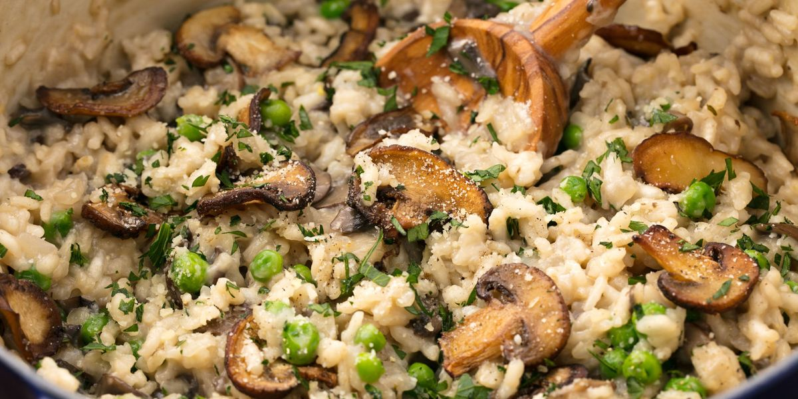

Mushroom Risotto

Description
A simple and easy mushroom risotto made with homemade mushroom stock
that packs a ton of umami for not much effort. Recipe courtesy of Adam
Ragusea on YouTube.
Authentic Italian-style risotto cooked the slow and painful way,
but-oh so worth it. Complements grilled meats and chicken dishes very
well. Check the rice by biting into it. It should be slightly al dente
(or resist slightly to the tooth but not be hard in the center).
Ingredients
- 16 oz (1/2 kilo) mushrooms
- 1 onion
- 1-2 carrots
- 1-2 celery stalks
- 1-2 shallots
- 4-6 cloves of garlic
- 1 cup (200g) risotto rice
- Butter
- Cognac (or white wine, or water/stock + a little balsamic
vinegar)
- Parmesan or pecorino cheese (or vegan sour cream instead of
cheese and butter)
- Olive oil
- Chives
- Salt
- Pepper
Steps
- Pull the stems out of all the mushrooms and wash the stems, if
necessary. In a large sauce pan, fry the stems in olive oil until
thoroughly browned. Roughly chop the onion, carrots and celery, and
put them in with the stems. Cook the vegetables until they're
starting to brown, stirring constantly. Cover everything in water
and simmer for about two hours. Strain, discard the solids, and
season the stock with salt (and/or MSG) to taste.
- Slice the mushroom caps into big chunks. Finely chop the shallots
and garlic. In a wide pan, start heating a big knob of butter and a
glug of olive oil. Put in the mushrooms and sauté until most of their
water has come out and evaporated and the mushrooms are thoroughly
browned.
- Push the mushrooms to the rim of the pan and dump the shallots
in the center. Stir and fry the shallots for a moment, then dump in
the garlic and stir to combine everything in the pan. Make another
well in the center of the pan then dump in the rice. Stir the rice
and let it brown for a moment, then stir to combine everything in
the pan.
- If using cognac or wine, deglaze with a big splash of it now.
If not, deglaze with water/stock and put in a little glug of balsamic
vinegar. Then add enough stock to more than cover the rice, and let
is simmer aggressively until absorbed, stirring occasionally.
- Then start adding additional stock in small doses and stirring
constantly until the rice is almost cooked (which you should
test by tasting). If you run out of your mushroom stock, just use
water. When the rice is almost cooked, turn the heat off and stir
in a big knob of butter and a big pile of grated cheese (or vegan
sour cream instead of butter and cheese), and black pepper and
additional salt to taste.
- Serve and top with fresh chopped chives.